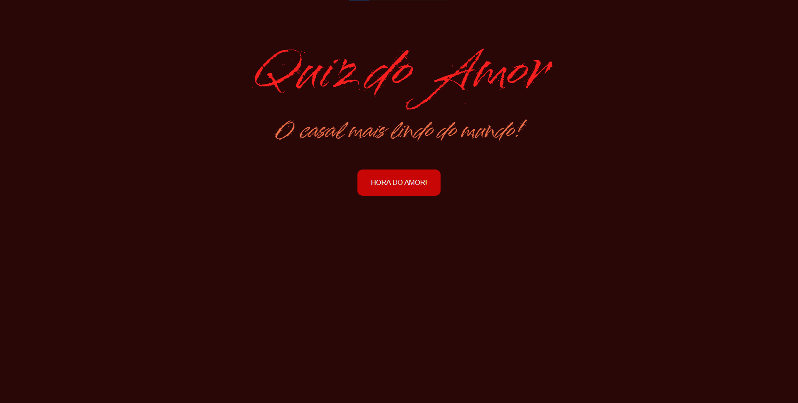

Download CV
Download CV
Meus Projetos

Jogo do Número Secreto
Projeto onde o utilizador tenta adivinhar o número escolhido aleatoriamente pelo site. Interação simples, com foco em diversão e desafio.
HTML5
CSS3
JavaScript

Quiz do Amor
Projeto pessoal criado como presente. Aplicação web interativa com perguntas sobre relacionamentos, oferecendo feedback personalizado e design responsivo.
HTML
CSS
JavaScript

Jogo de Amigo Secreto
Aplicação web interativa para sorteio de Amigo Secreto. Permite adicionar nomes, realizar sorteios aleatórios e reiniciar o jogo.
HTML
CSS
JavaScript